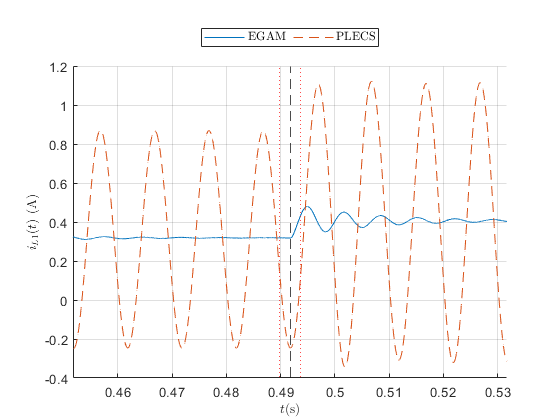

Contents
close all clear all clc
Test selection
%Start by selecting the type of test you'll be performing. There are three types if test that you can choose from: %start: starup test for inverter %loadstep: load step is applied to an inverter in steady state and transients are observed %modstep: modulation index step is applied to an inverter in steady state and transients are observed %testType = 'start'; %testType = 'loadstep'; testType = 'modstep';
Parameter settings
fix the parameters of the inverter system (or any other system you are modeling).
fsw = 10e+3; %switching frequency fg = 50; % modulation frequency Tsw = 1/fsw; wg = 2*pi*fg; % angular modulation ferequency ws = 2*pi*fsw; % angular switching ferequency params.Vdc = 50; % set the dc side voltage params.L1 = 2.2e-3; % dc side inductor params.L2 = 2*2.2e-3; % ac side inductor params.RindDCLF = (200+87)*1e-3; % dc inductor esr low frequency params.RindDCHF = 10; % dc indcutor esr high frequency params.RindACLF = (2*87)*1e-3; % ac inductor esr low frequency params.RindACHF = 20; % ac inductor esr high frequency params.C1 = 520e-6; % dc capacitor params.ESRC1 = 100e-3; % dc capacitor esr (not included in EGAM model; only for PLECS model) params.C2 = 10e-6; % ac capacitor params.ESRC2 = 1; % ac capacitor esr (not included in EGAM model; only for PLECS model) params.RL1 = 45; % load resistance before load step params.RL2 = 22.5; % load resistance after load step params.VCinit = 0; % initial capacitor voltages params.ILinit = 0; % initial inductor currents params.modIdx1 = 0.75; % modulation index before mod step params.modIdx2 = 0.85; % modulation index after mod step params.starttime = 0.4; % instant of inverter operation startup params.steptime = 0.2+25/50; % instant of load step params.modsteptime = 0.2+30/50; % instant of modulation index step sw_phase = (pi)*(Tsw/(2*pi)); % phase in radians of the carrier wavefrom phi_hat = sw_phase * ((2*pi)/Tsw); sw_phase_plecs = 0; swmag = 1;
time settings
setting the simulation time, startup time, modstep time, load step time different settings are applied as they were used to overlay hardware results. This is not relavant if you are running without hardware results. You can choose any values you like.
if strcmp(testType,'loadstep') phi_bar = 0*pi/180; % modulation waveform's phase in (deg to radians) params.steptime = 25/50; % instant of inverter operation startup params.modsteptime = 30/50; % instant of modulation index step sim_time = 30/50 + (params.starttime); % simulation time of both PLECS and ode solver elseif strcmp(testType,'modstep') phi_bar = (-60)*pi/180; % modulation waveform's phase in (deg to radians) params.steptime = 30/50; % instant of inverter operation startup params.modsteptime = 0.49175; % instant of modulation index step sim_time = 30/50 + (params.starttime); % simulation time of both PLECS and ode solver elseif strcmp(testType,'start') phi_bar = 0*pi/180; % modulation waveform's phase in (deg to radians) params.steptime = 45/50; % instant of inverter operation startup params.modsteptime = 45/50; % instant of modulation index step sim_time = 10/50 + (params.starttime); % simulation time of both PLECS and ode solver end
p-axis and r-axis flag settings
p flags' span decides how many w1 harmonics are included in simulation r flags' span decides how many w2 harmonics are included in simulation
pflagRange = 1; % max value of pflags; ex: if this is 2, it includes 0, 1, 2 rflagRange = 3; % max value of pflags; ex: if this is 3, it includes 0, 1, 2, 3 % pflags, rflags are two vectors that have different combinations of p-axis % and r-axis harmonics. These flag vectors are critical to the functioning % of EGAM simulatuion. They acts like keys to encode and decode interfaces % between Fourier vectors: x and Discrete Fourier Images (DFI): Fx. [pflags, rflags] = generatePRflags(pflagRange,rflagRange);
Computing EGAM variables: T, q, and R
% computing the T matrix for EGAM T = getTmatrix(pflags, rflags, wg, ws); % R matrix is a resistance matrix that accounts for both the high frequency % and low frequency resistances. It needs the pflag and rflag variables in % order to know where exactly the resiostances should go in the matrix. params.RIndDCSide = getRmatrix(params.RindDCLF, params.RindDCHF, pflags, rflags); params.RIndACSide = getRmatrix(params.RindACLF, params.RindACHF, pflags, rflags); % getting SPWM switching vectors before modulation index step mod_mag = params.modIdx1; %before mod step m10c = mod_mag*cos(phi_bar); m10s = mod_mag*sin(phi_bar); m01c = m10c; m01s = m10s; q1 = getSPWMcoeff(pflags, rflags, m10c, m10s, phi_hat, phi_bar); % getting SPWM switching vectors after modulation index step mod_mag = params.modIdx2; %after mod step m10c = mod_mag*cos(phi_bar); m10s = mod_mag*sin(phi_bar); m01c = m10c; m01s = m10s; q2 = getSPWMcoeff(pflags, rflags, m10c, m10s, phi_hat, phi_bar); % assigning the %vC10(1) = params.Vdc;
Initializing and running the EGAM model
% this is going to be the vector size of each state variable in frequency % domain vector_size = (2*max(pflags) + 1) * (2*max(rflags) + 1); % zeroing out state variables during initialization iL10 = zeros(1,vector_size); vC10 = zeros(1,vector_size); iL20 = zeros(1,vector_size); vC20 = zeros(1,vector_size); % stacking the state vectors together to get a composite vector x0 = [iL10; vC10; iL20; vC20]; % setting the simulation time before running the ode process time_step = 1e-5; tspan = 0:time_step:sim_time; %running the ode process [t,x] = ode23tb(@(t,x)Inverter_model(t,x,q1, q2,T,pflags, rflags, params),tspan,x0);
reconstruction of time domain signals
% at this point, x is the average vector of all the states represented as % fourier coefficients % the time domain waveforms are recaluclated by x(t) = C(t)*x IL1 = x(:,1:vector_size); %getting dc inductor current fourier states VC1 = x(:,vector_size+1:2*vector_size); %voltage dc capacitor voltage fourier states IL2 = x(:,2*vector_size+1:3*vector_size); %current ac inductor current fourier states VC2 = x(:,3*vector_size+1:4*vector_size); %voltage ac capacitor voltage fourier states % unrolling the fourier vector train to build the time domain signal iL1_t = build_signal_from_fourier_vector_train(IL1,pflags,rflags,wg,ws,t); vC1_t = build_signal_from_fourier_vector_train(VC1,pflags,rflags,wg,ws,t); iL2_t = build_signal_from_fourier_vector_train(IL2,pflags,rflags,wg,ws,t); vC2_t = build_signal_from_fourier_vector_train(VC2,pflags,rflags,wg,ws,t);
running the Simulink file to compute baseline
PLECS_SIM_time = sim_time; % setting simulink simulation time sim('Single_phase_inverter.slx')
running plot scripts
run('plot_Data.m');
Warning: Imaginary parts of complex X and/or Y arguments ignored. Warning: Imaginary parts of complex X and/or Y arguments ignored. Warning: Imaginary parts of complex X and/or Y arguments ignored. Warning: Imaginary parts of complex X and/or Y arguments ignored.